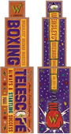

YUMRUKLAYAN TELESKOPLAR
“...‘Onu sıktım ve o da - o da beni yumrukadı!’ ... ‘Ve senin gözüne ne oldu, Hermione’ ‘Sizin yumruk atan teleskop’ dedi Hermione kederli kederli...”
“...‘Onu sıktım ve o da - o da beni yumrukadı!’ ... ‘Ve senin gözüne ne oldu, Hermione’ ‘Sizin yumruk atan teleskop’ dedi Hermione kederli kederli...”